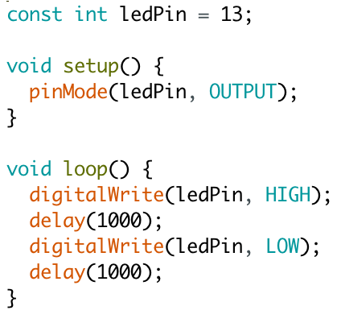

Le contrôle des ports de la carte Arduino est très simple.
Pour allumer une LED, on branche l’anode à un port digital et la cathode à la masse. Ensuite, il suffit de passer une commande pour appliquer la tension à ce port.
Exemple de code pour clignoter une LED :
